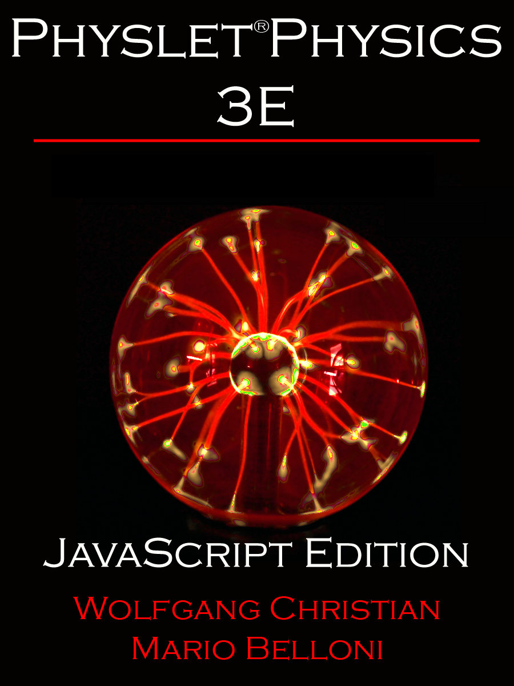

Physlet® Physics was developed at Davidson College by Wolfgang Christian and Mario Belloni.

EJS Physlets® are JavaScript adaptations of Physlet® curricular material developed using the Easy Java/JavaScript Simulations (EjsS) authoring and modeling tool. The illustrations and problems in these packages are adapted from the Java applet version of Physlet Physics by Wolfgang Christian and Mario Belloni and are available on the Open Source Physics website. The simulations in these package are implemented in JavaScript so that they can run on both desktop computers and mobile devices.
Physlet® Illustrations are designed to demonstrate physical concepts. Students need to interact with the Physlet, but the answers to the questions posed in the Illustration are given or are easily determined from interacting with it. Many Illustrations provide examples of physics applications. Other Illustrations are designed to introduce a particular concept or analytical tool. Typical uses of Illustrations would include "reading" assignments prior to class and classroom demonstrations.
Physlet® Problems are interactive versions of the kind of exercises typically assigned for homework. They require the students to demonstrate their understanding without as much guidance as is given in the Explorations. They vary widely in difficulty, from exercises appropriate for high school physics students to exercises appropriate for calculus-based university physics students. Some Problems ask conceptual questions, while others require detailed calculations. Typical uses for the Problems would be for homework assignments, in-class concept questions, and group problem-solving sessions.
Additional EJS models can be found by searching for the expression "JS Models" on the Open Source Physics website.

Physlet® Physics was developed at Davidson College by Wolfgang Christian and Mario Belloni.